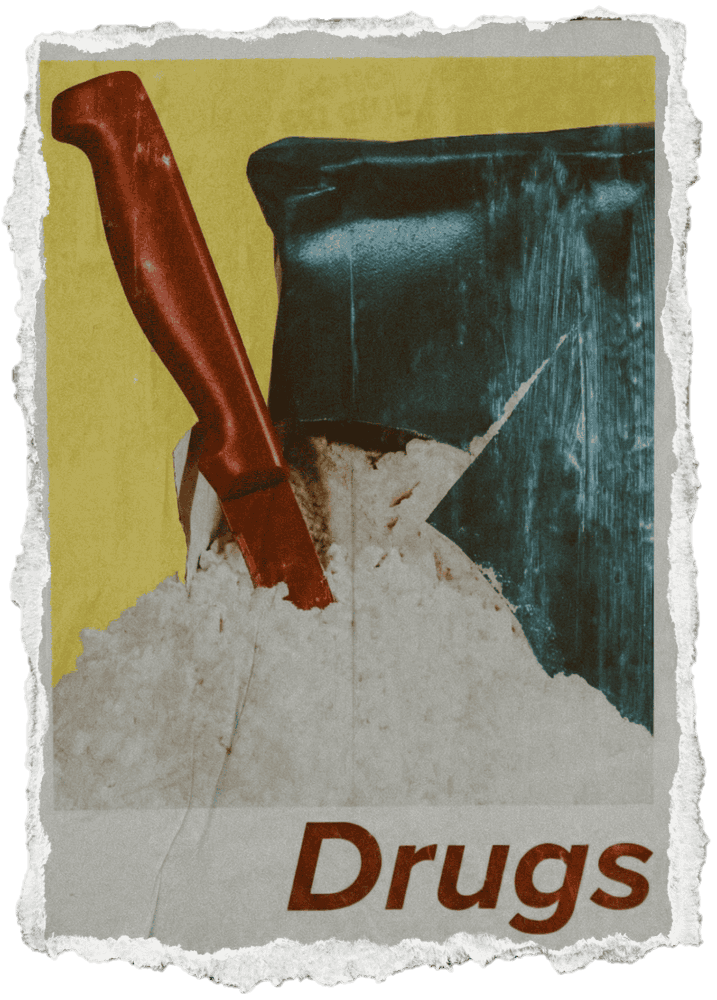

Drug Export
magari connection map con gli stati che importano

The Drug War is a global anti-narcotics campaign that aims to reduce the drug trade while also
battling against government corruption.
The problem is that the actual abolition of drugs is not on everyone's interest: there are some entities that prefer the situation as it is.
Our paper in the first pages narrated of stereotypical wars, with soldiers, territorial invasions etc.
In this case, however, we define this War as a Not-War: the battle itself is against an inanimate entity,
which is protected by humans.
The media narration exploded with the advent of Pablo Escobar and the Medellín Cartel: the Colombian drug lord monopolized
the cocaine trade into the US in the 1980s and by his death he had an estimated net worth of $30 billion.
Its convictions were illegal drug trade, assassinations, bombing, bribery, racketeering and murder.
However, like in any self-respecting criminal "family", he needed the approval of the people to keep its monopoly:
he sponsored social projects and charity to elevate its image.
He also helped in the constructions of houses, clinics, sport camps in the barrios for poor people, and this gave him
one of his nicknames, Paisa Robin Hood.
Of course this is nothing with respect to the 4,000 direct deaths he caused, including 600 police officers, and many others indirect
deaths caused by the drug use.
In the end it was all about Plata o Plomo, silver or lead: given the magnitude of the Medellín Cartel and its allies (like Los Priscos), it's not that difficult to
understand why many people chose plata.
magari connection map con gli stati che importano
commentare grafico